6．线性结合代数
从纯粹代数的观点看，四元数是令人兴奋的，因为它提供了一个除了乘法的交换性而外具有实数和复数性质的代数的例子。19世纪后半期，为了看到能创造出些什么样的变种，同时又要保持实数和复数的许多性质，许多超复数系统被大量探索出来了。
凯莱(19)给出了实四元数的一个八单元推广，他的单元是1，e1，e2，…，e7具有性质
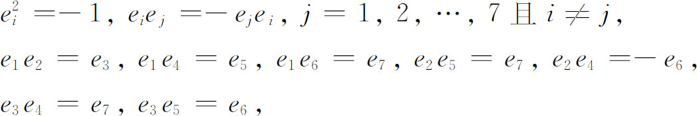
以及对三足标的每一个集合循环地进行排列，从这后7个方程得到的14个方程，例如
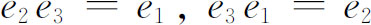
。一个一般的（八元数）数x定义为
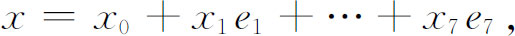
这里xi是实数。x的模N（x）定义为
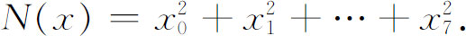
积的模等于模的积。乘法的结合律一般不成立（和乘法的交换律一样）。右除及左除，除去用零除以外，总是可能的并且是唯一的。这件事凯莱没注意到，而是由迪克森（Leonard Eugene Dickson）(20)证明的。凯莱在以后的文章中给出了另外的超复数的代数，和上面的一个有些不同。
哈密顿在他的《四元数讲义》(21)中还引进了拟四元数，即带有复系数的四元数。他指出乘积定律对这些拟四元数不成立；即两个非零的拟四元数相乘可以为零。
伦敦的大学学院的数学和力学教授克利福德（1845—1879）创立了另一类型的超复数(22)，他也称之为拟四元数。设q和Q是实四元数，又设ω满足ω2＝1，且ω与每个实四元数交换，则q＋ωQ是一拟四元数。克利福德的拟四元数满足乘法的乘积定律，但这乘法不是结合的。克利福德在后来的工作中引进了以他的名字命名的代数。克利福德代数具有单元1，e1，e2，…，en-1，每个单元的平方满足
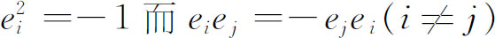
。两个或多个单元的每一乘积是一个新的单元，所以有2n个不同的单元。所有乘积是可结合的，一个型就是一个数量乘上一个单元，而一个代数就由型的和与积生成。新的超复数系统继续涌现，种类是大量的。哈佛大学数学教授本杰明·皮尔斯（Benjamin Peirce，1809—1880）在一篇1870年宣读而在1871年(23)以石印形式发表的文章《线性结合代数》（Linear Associative Algebra）中定义并给出一份当时已经知道的线性结合代数概要。线性这个词意味着任何两个原始单元的积可化简成这些单元之一，就像四元数中i乘j用k代替一样，而结合这个词意味着乘法是结合的。在这些代数中，加法具有实数和复数的通常性质。在这篇文章中本杰明·皮尔斯引进了幂零元的概念，即元素A对某正整数n满足An＝0，也引进了幂等元的概念，即元素A对某个n满足An＝A。他还证明了一个代数如果在其中至少有一个非幂零元，则必具有一个幂等元。
就在数学家们创立特定的代数的同一期间，在各种这样的代数中能有多大自由度的问题也已经出现在他们面前。高斯深信（Werke．2，178），保持复数基本性质的复数的扩张是不可能的。有意义的是，当哈密顿找寻一个三维的代数来表达空间的向量而建立了没有交换性的四元数时，他不能证明三维交换代数不存在。格拉斯曼也没有这样一个证明。
在这个世纪的后期，精确的定理才建立起来。1878年，弗罗贝尼乌斯（1849—1917）(24)证明了具有有限个原始单元的有乘法单位元素的实系数（原始单元的）线性结合代数，如服从结合律，那就只有实数、复数和实四元数的代数。这个定理也由查尔斯·皮尔斯（Charles Sanders Peirce，1839—1914）在他父亲的文章的附录(25)中独立地加以证明。魏尔斯特拉斯1861年得到另一关键结果：有有限个原始单元的实或复系数（原始单元的）线性结合代数，如服从乘积定律和乘法交换律，就是实数的代数和复数的代数。大约1870年戴德金（Richard Dedekind）获得了同样的结果。魏尔斯特拉斯的结果发表于1884年(26)而戴德金发表在下一年(27)。
1898年赫尔维茨（Adolf Hurwitz，1859—1919）(28)证明了实数、复数、实四元数和克利福德拟四元数是仅有的满足乘法定律的线性结合代数。
这些定理是有价值的，因为它们告诉我们，在推广复数系统时，如果我们希望至少保持它的某些代数性质，那么我们能期望得到什么结果。如果哈密顿知道这些定理的话，他就会节省找寻三维向量代数的好些年劳动。
具有有限个或甚至无限个生成（原始）单元以及具有或不具有除法的线性代数的研究，几乎到20世纪还继续成为一个活跃的课题，如迪克森和韦德伯恩（Joseph H．M． Wedderburn）那样的人对这个课题作了许多贡献。
参考书目
Clifford，W．K．：Collected Mathematical Papers （1882），Chelsea （reprint），1968．
Collins，Joseph V．：“An Elementary Exposition of Grassmann's Ausdehnungslehre，”Amer． Math．Monthly，6，1899，several parts；and 7，1900，several parts．
Coolidge，Julian L．：A History of Geometrical Methods，Dover （reprint），1963，pp．252-264．
Crowe，Michael J．：A History of Vector Analysis，University of Notre Dame Press，1967．
Dickson，Leonard E．：Linear Algebras，Cambridge University Press，1914．
Gibbs，Josiah W．，and E．B．Wilson：Vector Analysis （1901），Dover （reprint），1960．
Grassmann，H．G．：Die lineale Ausdehnungslehre （1844），Chelsea （reprint），1969．
Grassmann，H．G．：Gesammelte mathematische und physikalische Werke，3 vols．，B．G． Teubner，1894-1911；Vol．1，PartⅠ，1-319 contains Die lineale Ausdehnungslehre；Vol．1，PartⅡ，1-383 contains Die Ausdehnungslehre．
Graves，R．P．：Life of Sir William Rowan Hamilton，3 vols．，Longmans Green，1882-1889．
Hamilton，Sir Wm．R．：Elements of Quaternions，2 vols．，1866，2nd ed．，1899-1901，Chelsea （reprint），1969．
Hamilton，Sir Wm．R．：Mathematical Papers，Cambridge University Press，1967，Vol．3．
Hamilton，Sir Wm．R．：“Papers in Memory of Sir William R．Hamilton，”Scripta Math．，1945；also in Scripta Math．，10，1944，9-80．
Heaviside，Oliver：Electromagnetic Theory，Dover （reprint），1950，Vol．1．
Klein，Felix：Vorlesungen über die Entwicklung der Mathematik im 19．Jahrhundert，Chelsea （reprint），1950，Vol．1，pp．167-191；Vol．2，pp．2-12．
Maxwell，James Clerk：The Scientific Papers，2 vols．，Dover （reprint），1965．
Peacock，George：“Report on the Recent Progress and Present State of Certain Branches of Anal-ysis，”British Assn．for Advancement of Science Report for 1833，London，1834．
Peacock，George：A Treatise on Algebra，2 vols．，2nd ed．，Cambridge University Press，1845；Scripta Mathematica （reprint），1940．
Shaw，James B．：Synopsis of Linear Associative Algebra，Carnegie Institution of Washington，1907．
Smith，David Eugene：A Source Book in Mathematics，Dover （reprint），1959，Vol．2，pp． 677-696．
Study，E．：“Theorie der gemeinen und höheren complexen Grössen，”Encyk．der Math．Wiss．，B．G．Teubner，1898，Ⅰ，147-183．
————————————————————
(1) Brit．Assn．for Adv．of Sci．，Rept．3，1833，185-352．
(2) 1842-1845；1st ed．，1830．
(3) Transactions of the Royal Society of Edinburgh，14，1840，208-216．
(4) Ann．de Math．，5，1814/1815，93-140．
(5) Trans．Camb．Phil．Soc．，1841，1842，1844，和1847．
(6) Trans．Royal Irish Academy，17，1837，293-422＝Math．Papers，3，3-96．
(7) Werke，8，357-362．
(8) Trans．Royal Irish Academy，15，1828，69-174＝Math．Papers，1，1-106．
(9) Trans．Royal Irish Academy，17，1837，1-144＝Math．Papers，1，164-293．
(10) North British Review，14，1858，57．
(11) Proc．Royal Irish Academy，2，1844，424-434＝Math．Papers，3，111-116．
(12) Trans．Royal Irish Academy，21，1848，199-296＝Math．Papers，Ⅲ，159-226．
(13) Jour．für Math．，49，1855，10-20与123-141＝Ges．Math．und Phys．Werke，2，PartⅠ，199-217．
(14) Proc．London Math．Soc．，3，1871，224-232＝The Scientific Papers，Vol．2，257-266．
(15) 因为在向量分析中
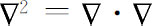
，于是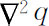
在物理上表示梯度的散度，或q的最大空间变化率的散度。然而这个物理意义从下述事实来看更为明显，即满足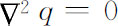
的函数q使狄利克雷积分取最小值［看第28章的（34）］。这个积分是遍布于某个体积上的梯度量的平方。因此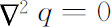
或者意味着极小梯度发生在任何一点，或者意味着偏离均匀度的差是一个极小值。如果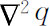
不是0，就必定存在某个偏离均匀度的差，因而将有一个恢复力。在数学物理中，包含 的这个或那个内容的各种方程实际上都是断言：自然界的行为永远是要恢复均匀。
的这个或那个内容的各种方程实际上都是断言：自然界的行为永远是要恢复均匀。代替
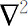
的记号Δ是墨菲在1833年引进的。(16) The Scientific Papers，2，17-90．
(17) Mém．Acad．Sci．St．Peters．，（6），1，1831，39-53．
(18) 此定理是开尔文勋爵1850年7月在给斯托克斯的一封信中叙述的。
(19) Phil．Mag．，（3），26，1845，210-213和30，1847，257-258＝Coll．Math．Papers，1，127和301 ．
(20) Amer．Math．Soc．Trans．，13，1912，59-73．
(21) 1853，p．650．
(22) Proc．Lond．Math．Soc．，4，1873，381-395＝Coll．Math．Papers，181-200与Amer．Jour．of Math．，1，1878，350-358＝Coll．Math．Papers，266-276．
(23) Amer．Jour．of Math．，4，1881，97-229．
(24) Jour．für Math．，84，1878，1-63＝Ges．Abh．，1，343-405．
(25) Amer．Jour．of Math．，4，1881，225-229．
(26) Nachrichten König．Ges．der Wiss．zu Gött．，1884，395-410＝Math．Werke，2，311-332．
(27) Nachrichten König．Ges．der Wiss．zu Gött．，1885，141-159与1887，1-7＝Werke，2，1-27．
(28) Nachrichten König．Ges．der Wiss．zu Gött．，1898，309-316＝Math．Werke，2，565-571 ．